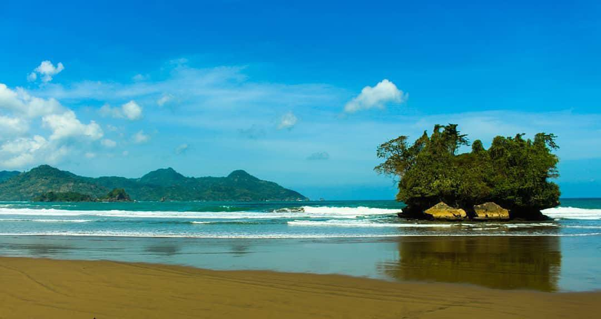
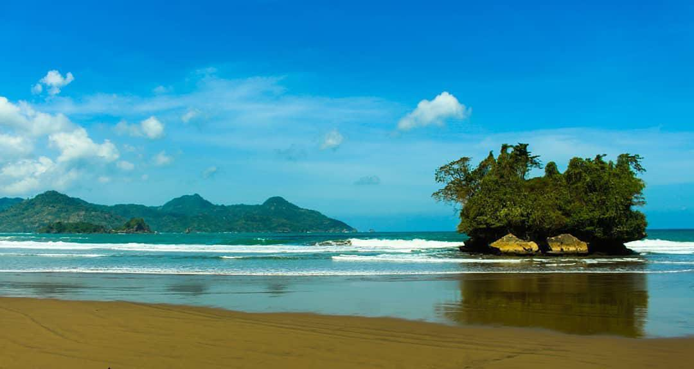

Destinasi Favorit di Trenggalek


 

Pantai Prigi
Pantai Prigi adalah salah satu pantai terpopuler di Trenggalek. Dikenal dengan keindahan alamnya, pantai ini menawarkan pasir putih, ombak yang tenang, dan pemandangan sunset yang menawan. Terdapat juga fasilitas seperti warung makan dan penginapan di sekitar pantai.